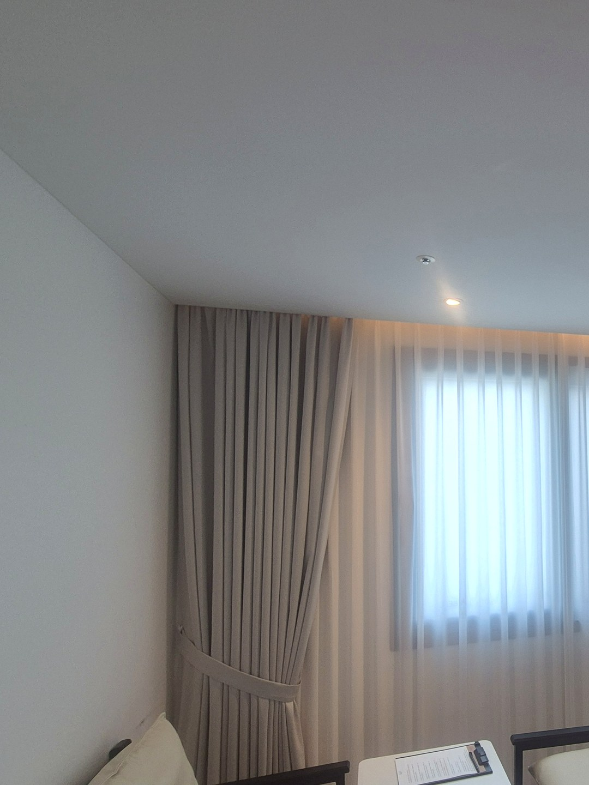
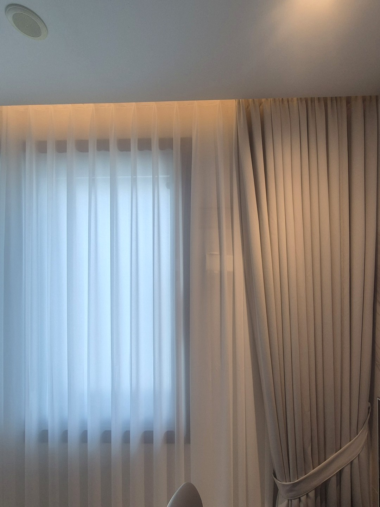
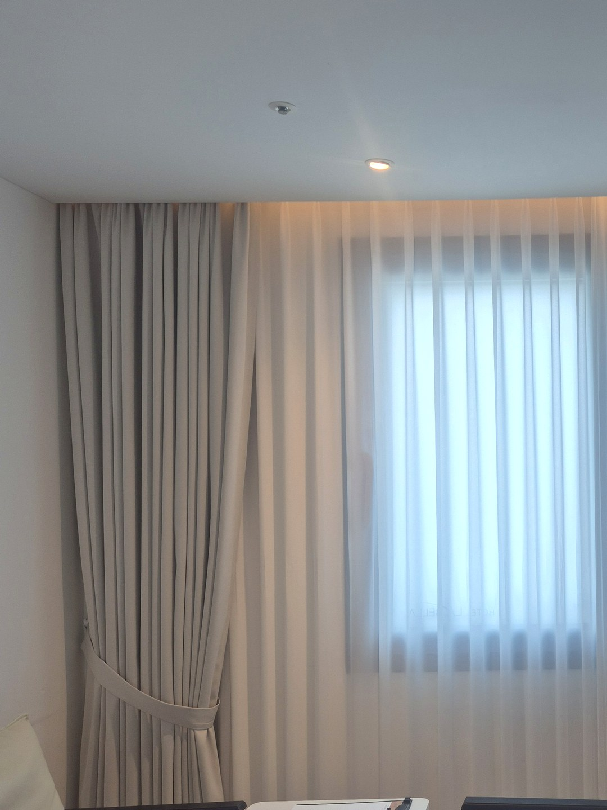
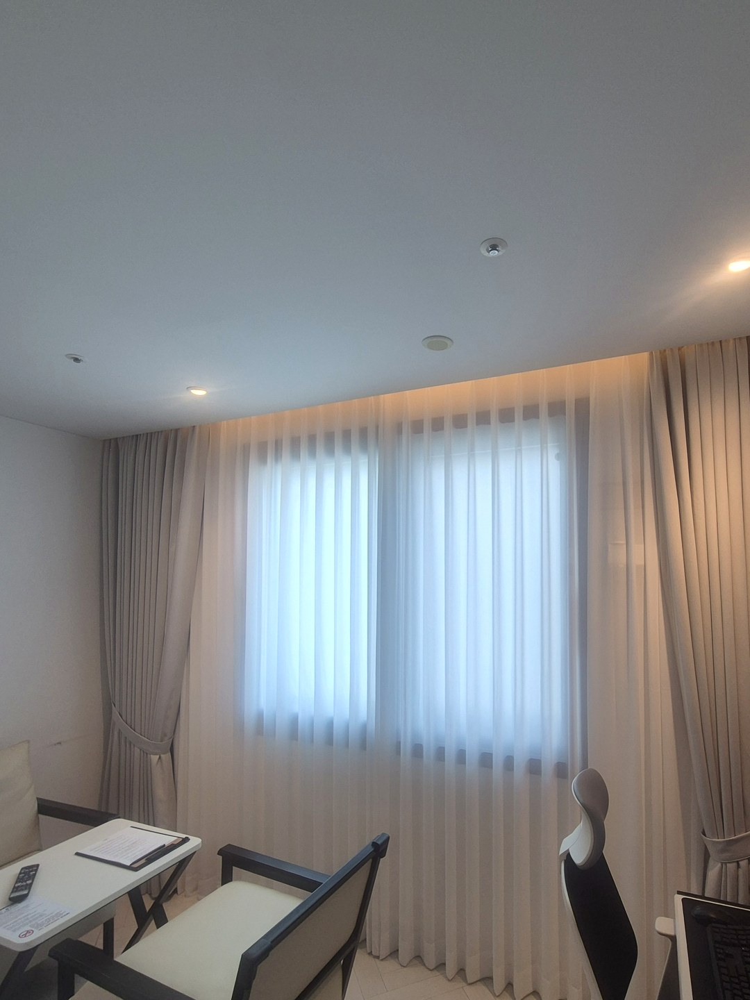
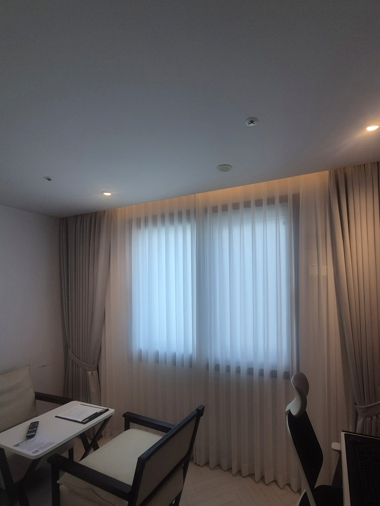

2026년 9월 15일 시공
대구 동성로 호텔 객실
쉬폰 두배주름·방음암막커튼 시공후기

대구 동성로에 있는 호텔의 두 번째 객실 시공입니다.
이달 초 이 호텔 객실 하나에 방음커튼을 달아 드렸고, 그 방을 운영해 보신 뒤 다른 객실도 맡겨 주셨습니다.
이번 방은 한 종류의 커튼이 아니라 성격이 다른 두 커튼을 앞뒤로 조합했습니다.
첫 객실 이야기는 동성로 호텔 방음커튼 시공후기에 따로 적어 두었습니다.
같은 호텔이라도 객실마다 답이 다릅니다
숙박업 커튼을 상담하면 전 객실을 똑같이 맞추고 싶어 하시는 경우가 많습니다.
관리하기 편하고 발주도 한 번에 끝나기 때문입니다.
그런데 객실은 창의 방향도, 바깥 조건도, 방의 크기도 제각각입니다.
첫 객실은 원단을 여러 장 겹쳐 가공한 방음커튼 한 종류로 갔습니다.
이번 객실은 낮과 밤의 쓰임을 나눠서 두 커튼을 겹쳐 거는 쪽으로 정했습니다.

창 쪽 — 흰 쉬폰, 두배 나비주름
창에 바로 붙는 쪽에는 흰 쉬폰을 달았습니다.
쳐 두면 햇빛은 들어오되 바깥에서 객실 안이 흐릿하게만 보입니다.
주름은 두배로 잡았습니다.
레일 길이의 두 배 가까운 원단을 넣어 나비 모양 주름을 촘촘히 세우는 방식입니다.
얇은 원단은 양이 모자라면 쳤을 때 힘없이 늘어지는데, 넉넉하게 넣으면 닫힌 상태에서도 골이 또렷하게 남습니다.

방 쪽 — 방음암막커튼
쉬폰 안쪽에는 방음암막커튼을 한 줄 더 걸었습니다.
잠잘 시간에 빛과 바깥 소리를 맡는 것은 이 커튼입니다.
쉬폰은 얇은 원단이라 소리를 줄이는 역할은 거의 하지 못합니다.
그래서 두 커튼의 몫을 처음부터 나눠서 설명드렸습니다.
색은 벽과 조명에 맞춰 밝은 그레이베이지로 골랐고, 낮에는 양옆으로 모아 끈으로 묶어 두게 했습니다.

천장 간접조명과 레일 자리
이 객실은 커튼 위쪽 천장에 간접조명 라인이 지나갑니다.
레일 두 줄이 조명을 가리지 않도록 위치를 먼저 잡고 커튼을 걸었습니다.
저녁에 조명을 켜면 쉬폰 윗부분이 은은하게 밝아져 객실이 한결 아늑해 보입니다.
폭은 창 크기에 딱 맞추지 않고 벽 끝까지 넓게 잡아, 커튼을 묶어 두었을 때도 창이 가려지지 않게 했습니다.


숙박업 사장님께 미리 말씀드리는 것
두 겹 구성은 여닫을 커튼이 두 개라 객실 정리하는 손이 조금 더 갑니다.
흰 쉬폰은 손이 자주 닿는 가장자리부터 색이 변하니, 두꺼운 커튼보다 세탁을 자주 하셔야 합니다.
대신 낮 시간에 객실이 밝고 넓어 보이는 장점이 있습니다.
어떤 객실에 어떤 구성이 맞는지는 창 사진과 객실 쓰임을 보고 같이 정하시면 됩니다.
호텔·모텔 객실 커튼을 알아보고 계시다면
객실 창 사진과 객실 수를 알려주시면 대략적인 견적을 말씀드립니다.
한 객실을 먼저 해 보시고 나머지를 정하셔도 됩니다.
숙박업 커튼 이야기는 호텔·모텔 방음커튼 안내에 따로 정리해 두었습니다.